시작하기 — 이 앱은 무엇인가요?
사설 분석(opinion)은 매일 수집되는 국내·해외 주요 언론사 사설을 주제별로 모아 보고, AI로 논조를 비교·분석하는 논설실 전용 도구입니다. 사설 수집·번역·성향 분석은 자동으로 매일 갱신됩니다.
모아 보기
국내·해외 사설을 같은 주제끼리 묶어 한 화면에서 비교
AI 비교 분석
세계일보 vs 타사 논조를 AI가 회의 보고용으로 정리
추이 분석
세계일보 사설의 성향·주제 흐름을 차트로 확인
로그인
논설실 공용 계정 1개로 로그인합니다. 브라우저를 닫으면 자동 로그아웃됩니다.
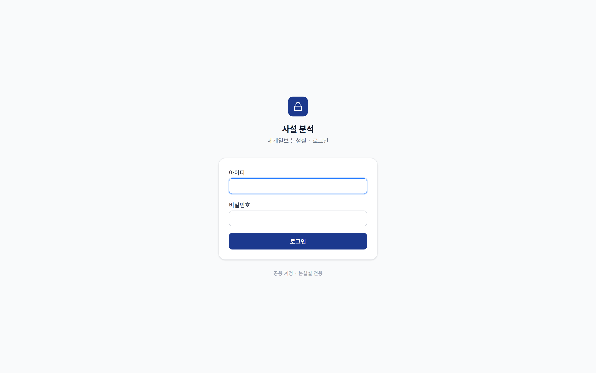
1 2 3- 1아이디 — 논설실 공용 아이디 입력
- 2비밀번호 입력
- 3로그인 버튼 클릭 → 오늘의 사설 화면으로 이동
화면 구성
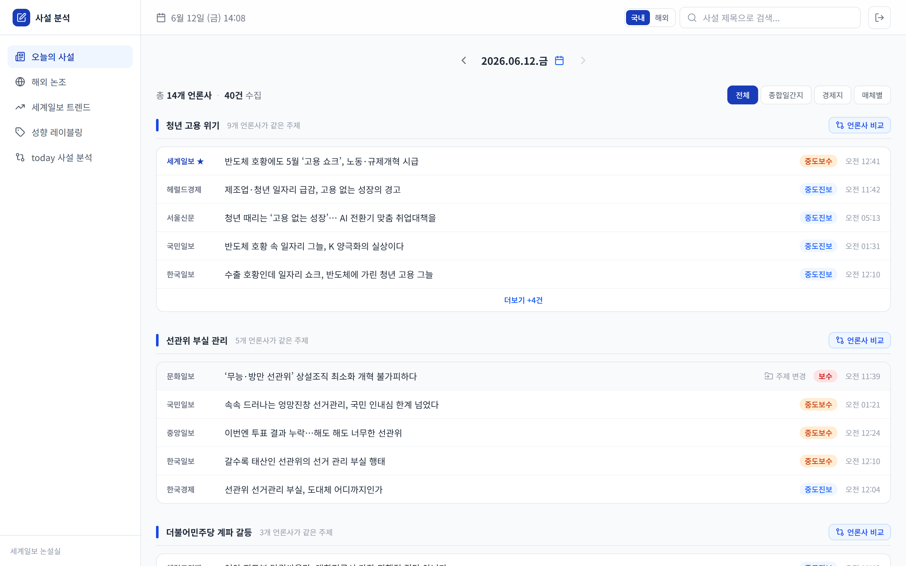
1 2 3- 1왼쪽 메뉴 — 오늘의 사설 · today 사설 분석 · 해외 논조 · 세계일보 트렌드 · 성향 레이블링
- 2상단 검색창 — 사설 제목·요약 검색, 결과 클릭 시 해당 사설이 바로 열림
- 3로그아웃 버튼 (오른쪽 위)
오늘의 사설
당일 수집된 국내 주요 언론사 사설을 같은 주제끼리 묶어 보여줍니다. 매체 간 주장을 한눈에 비교할 수 있습니다.
 1
2
3
4
1
2
3
4
- 1날짜 이동 — 화살표 또는 달력으로 다른 날짜 사설 보기 (‘오늘’ 버튼으로 복귀)
- 2필터 — 전체 / 종합일간지 / 경제지 / 매체별(신문사 단위로 묶기)
- 3언론사 비교 버튼 — 그 주제를 AI 비교 분석으로 이동 (이미 만든 주제는 ‘생성됨’ 표시)
- 4사설 행을 클릭하면 상세 모달이 열립니다 · 더보기 +N건으로 그룹 내 전체 보기
사설 상세 모달
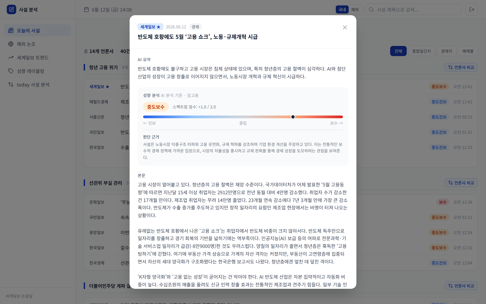
1 2 3- 1제목 · AI 요약
- 2성향 분석 · 판단 근거 (성향 게이지)
- 3본문 + 같은 주제 타사 사설. 맨 아래 원문 보기(네이버)로 출처 이동
주제 수동 보정 — AI가 잘못 묶었을 때
AI가 묶은 주제가 어색하면, 편집자가 직접 올바른 주제로 옮길 수 있습니다.
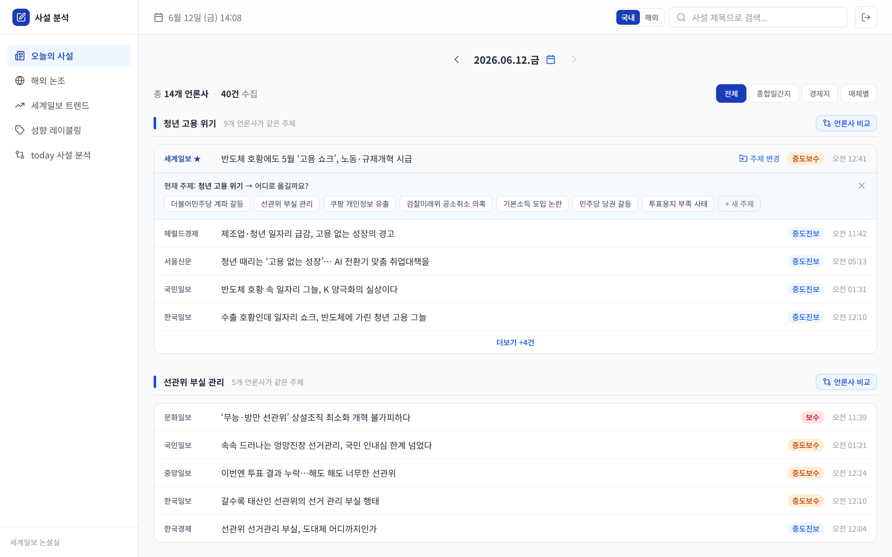
1 2- 1사설 행에 마우스를 올리면 나타나는 주제 변경 클릭
- 2펼쳐진 패널에서 기존 주제 후보를 클릭해 옮기거나 + 새 주제로 직접 입력
today 사설 분석 — 언론사 비교 보고서
같은 주제의 세계일보·타사 사설을 AI가 비교해 논설위원 회의 보고용 구조화 리포트로 만들어 줍니다.
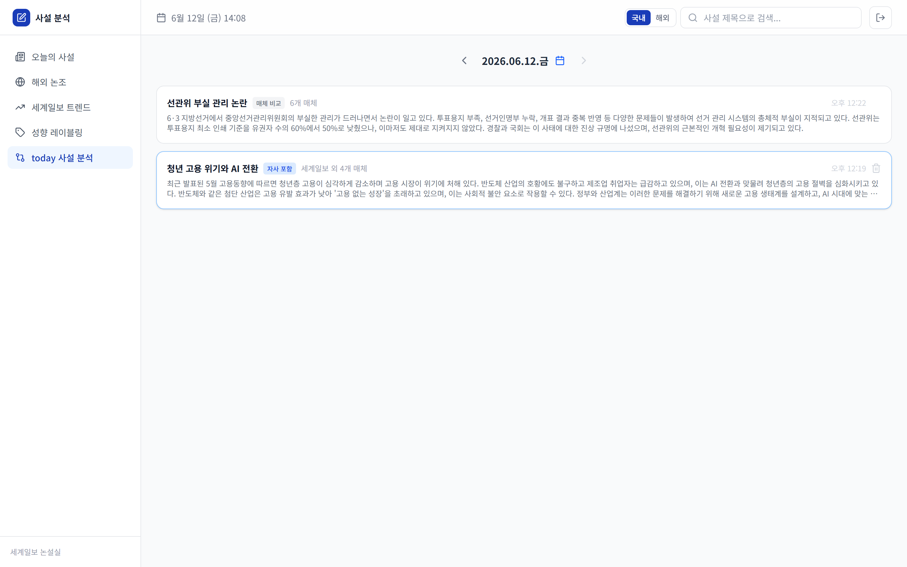
1 2 3- 1날짜 선택 — 그날 생성된 비교 보고서만 표시
- 2카드 클릭 → 상세 보고서 열기 (자사 포함 / 매체 비교 배지)
- 3카드 우측 호버 시 삭제(휴지통)
비교 보고서 상세
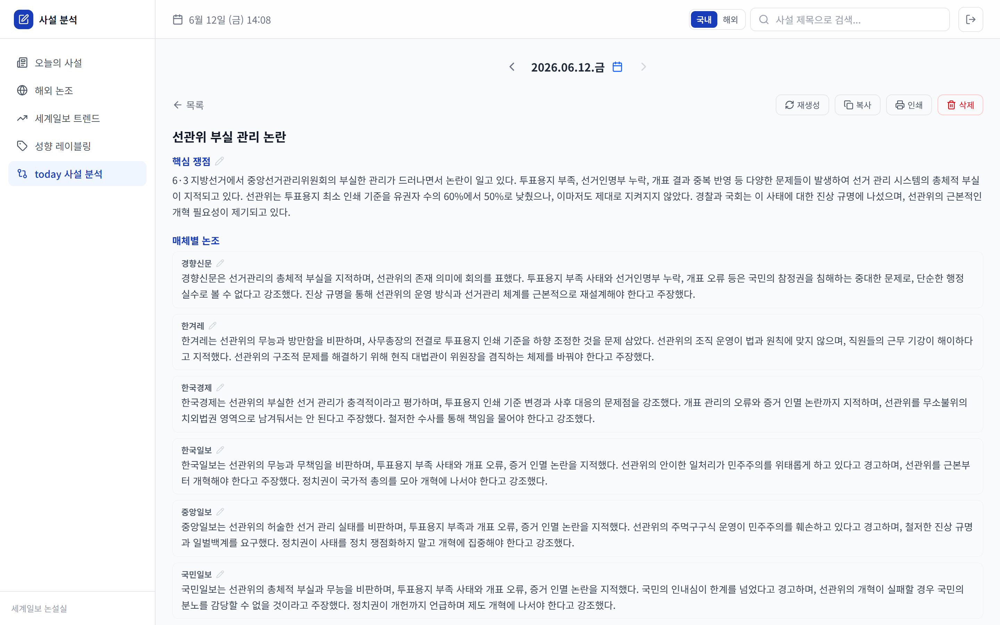
1 2 3 4- 1재생성 — 사설이 추가됐거나 내용이 짧을 때 다시 분석 (덮어쓰기)
- 2복사 — 마크다운 형식으로 복사 (메신저·회의자료 붙여넣기)
- 3인쇄 — 브라우저 인쇄/PDF
- 4각 섹션 우측 연필 아이콘으로 인라인 수정 → 저장/취소
보고서는 다음 5개 섹션으로 구성됩니다:
핵심 쟁점
이 주제의 논점 요약
세계일보 논조
자사 핵심 주장
타사 논조
매체별 주장 서술
공통점 · 차이점
매체 간 대비
시사점 · 논의 포인트
회의 안건용 bullet
해외 논조
주요 해외 언론(워싱턴포스트·가디언·요미우리 등)의 사설을 매체별로 모아, 한국어 번역과 원문을 함께 봅니다.
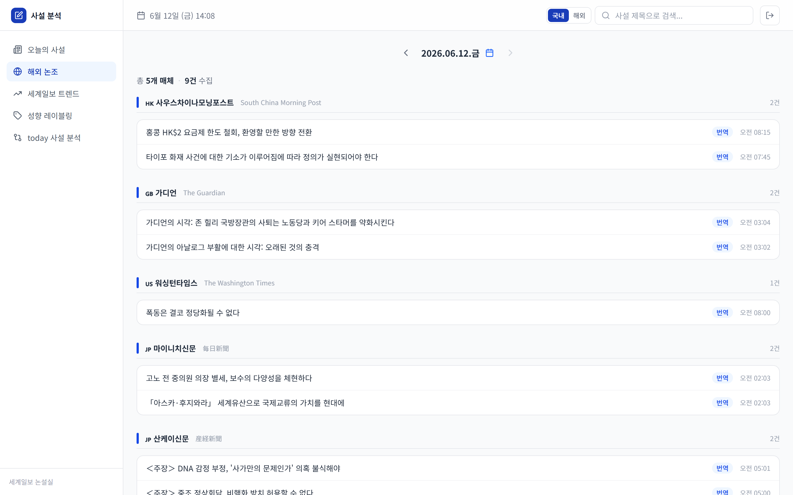
1 2 3- 1날짜 이동
- 2매체별 그룹 — 국기 + 매체명으로 구분
- 3번역 배지가 붙은 사설은 한국어 번역 제공
번역 / 원문 토글
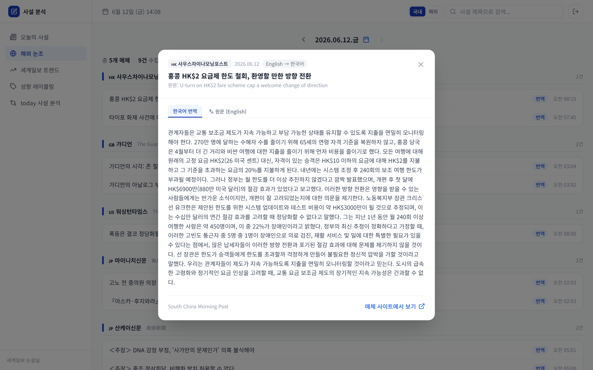
1 2 3- 1한국어 번역 탭
- 2원문 탭 (日本語 / English) — 번역과 원문을 나란히 대조
- 3매체 사이트에서 보기 버튼
세계일보 트렌드
세계일보 사설의 지난 90일 성향·주제 추이를 차트로 분석합니다.
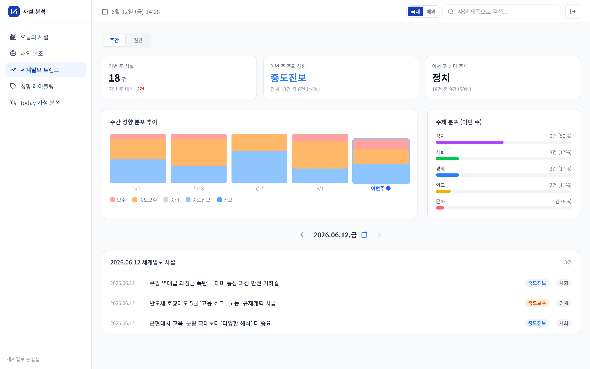
1 2 3 4- 1주간 / 월간 토글 — 집계 기간 전환
- 2통계 카드 — 사설 건수 · 주요 성향 · 최다 주제 (이전 기간 대비 증감)
- 3성향 분포 추이 차트 (좌) · 주제 분포 (우)
- 4아래에서 날짜별 세계일보 사설 목록 확인 (행 클릭 시 상세 모달)
성향 레이블링
편집자가 사설의 성향을 직접 평가해 AI 판단을 검증합니다. 쌓인 평가는 향후 분석 정확도 개선에 쓰입니다.
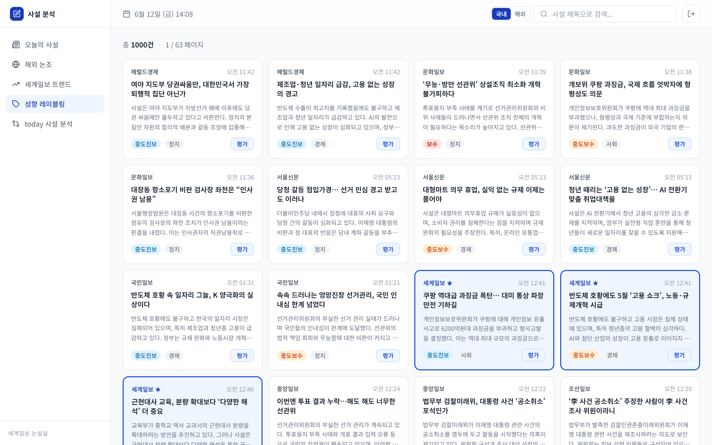
1 2 3- 1사설 카드 — 언론사·제목·요약·AI 성향 배지 (세계일보는 파란 테두리 + ★ 강조)
- 2카드의 평가 버튼 클릭 → 평가 모달
- 3총 건수 · 현재 페이지 표시 (페이지 이동 버튼은 목록 맨 아래)
평가 모달
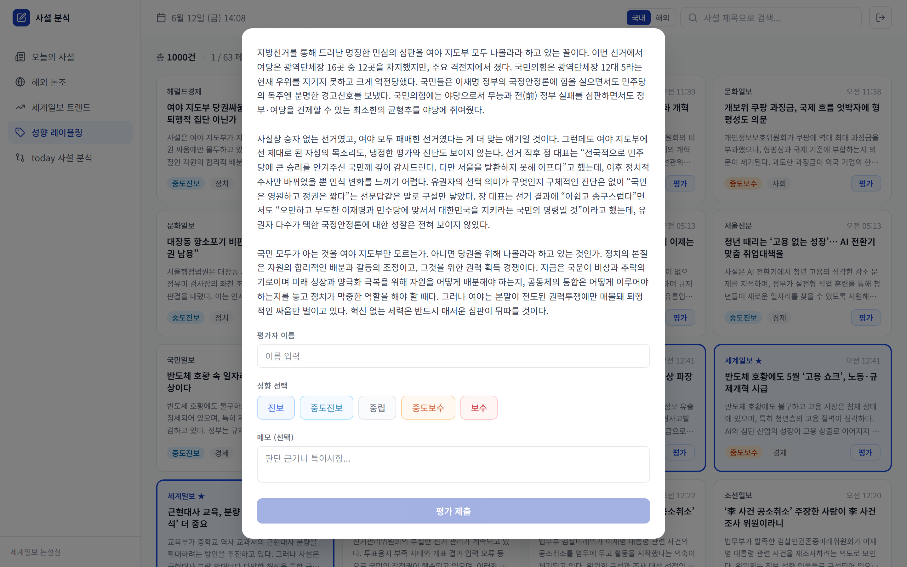
1 2 3- 1평가자 이름 입력 (필수)
- 2성향 5단계 선택 — 진보 · 중도진보 · 중립 · 중도보수 · 보수 (+ 메모 선택)
- 3평가 제출 → 내 판단 vs AI 판단(일치/불일치) + AI 근거 표시
자주 묻는 질문 · 팁
사설 분석 — 논설실 업무 도구
opinion-eta.vercel.app · 세계일보 논설실